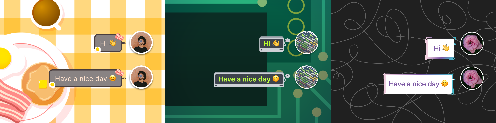
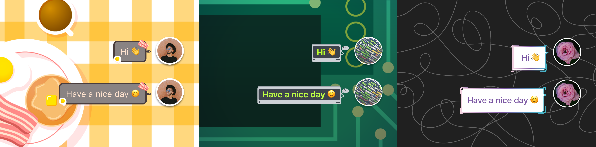

Amino is a mobile app that empowers users from around the world to share their passions, discover new interests, and make new friends. At Amino, I've worked on the Brand team doing digtal design. Some of my responsiblities include making ad creative templates, illustrating digital goods, designing external-facing marketing templates, collaborating on on-network campaigns, and supporting the Growth and Strategy teams.
Worked closely with Growth to design new ad creative templates to promote Amino across different channels.
Led creative direction and design of on-network campaign across multiple languages to promote events hosted by Amino's official partners.

Profile frames, chat bubbles, and stickers users can purchase in the Amino store and use across the app.
 

Stickers made for Amino's BTS community to commemorate the band's comeback.

"Knock-off Toy" stickers (e.g. Cuddle me Clemo, Schlurby, Beany Baby) made for a Black Friday on-network campaign.

Collaborated with the Growth team to create stickers for Amino's official partners.